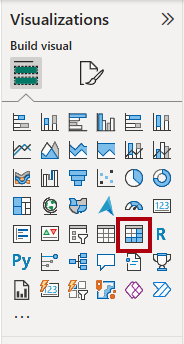
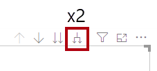
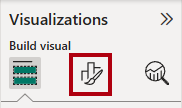
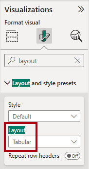
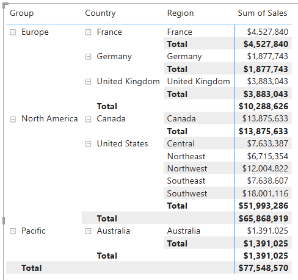
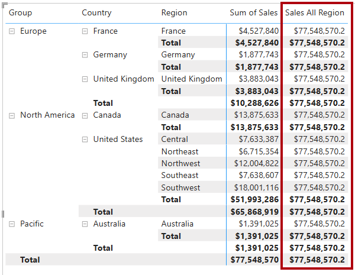
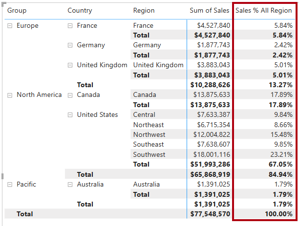
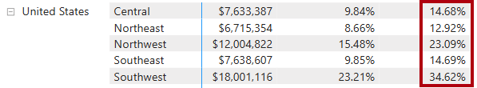
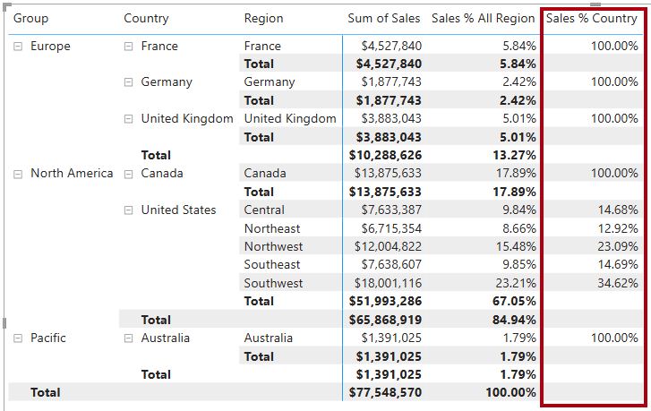
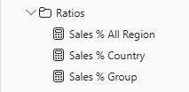

Disclaimer Click to show or hide
Disclaimer
This lab content is presented as designed by Microsoft and has been adapted to Skillable's platform for your use. If lab issues are identified that do not pertain directly to Skillable's platform, please escalate these to your instructor for proper escalation.
Required Lab Setup
Login
Hello Nurul Faqihah, on PL-300-VM-Win11 click Ctrl+Alt+Delete to activate the Ctrl + Alt + Delete sequence and bring up the logon page.
Any links like the one above will send Ctrl+Alt+Delete to the selected machine. This can also be done by the Keyboard menu in the upper-left hand corner of the screen.
Sign in as Student with the password Pa55w.rd.
Click Next to proceed to the lab.
This lab supports the Redirect Clipboard and TypeText functions.
With Redirect Clipboard, you can easily copy and paste blocks of code and other strings from the instructions and from other locations on the VM from your local clipboard directly to the VM. You may need to click Allow in your browser to allow access to your local clipboard.
Due to an issue in Azure Cloudshell, you need to use the right-click and paste mouse command instead of CTRL+V when you're in the VM. This method allows you to copy text from the VM and from your local machine.
Modify DAX filter context in Power BI
Lab story
In this lab, you'll create measures with DAX expressions that involve filter context manipulation.
You learn how to:
- Use the
CALCULATEfunction to manipulate filter context.
This lab should take approximately 30 minutes.
Get started
Select the button below to download the files needed for this lab in order to bypass the download steps below.
SUCCESS! The Lab Files have been downloaded.
If you used the Download Lab Files button above, skip the download steps below. The files will be in the designated folder.
To complete this exercise, first open a web browser and enter the following URL to download the zip file:
https://github.com/MicrosoftLearning/PL-300-Microsoft-Power-BI-Data-Analyst/raw/Main/Allfiles/Labs/05-modify-dax-filter-context/05-modify-dax-filter-context.zip
Extract the file to the C:\Users\Student\Downloads\05-modify-dax-filter-context folder.
Open the 05-Starter-Sales Analysis.pbix file.
Note: You may see a sign-in dialog as the file loads. Select Cancel to dismiss the sign-in dialog. Close any other informational windows. Select Apply Later, if prompted to apply changes.
Create a matrix visual
In this task, you'll create a matrix visual to support testing your new measures.
In Power BI Desktop, create a new report page.
On Page 3, add a matrix visual.

Resize the matrix visual to fill the entire page.
To configure the matrix visual fields, from the Data pane, drag the
Region | Regionshierarchy, and drop it inside the visual.The labs use a shorthand notation to reference a field or hierarchy. It will look like this:
Region | Regions. In this example,Regionis the table name andRegionsis the hierarchy name._Add the
Sales | Salesfield to the Values well.To expand the entire hierarchy, at the top-right of the matrix visual, select the forked-double arrow icon twice.

To format the visual, in the Visualizations pane, select the Format pane.

In the Search box, enter Layout.
Set the Layout property to Tabular.

Verify that the matrix visual now has 4 column headers.

At Adventure Works, the sales regions are organized into groups, countries, and regions. All countries—except the United States—have just one region, which is named after the country. As the United States is such a large sales territory, it's divided into five sales regions.
You'll create various measures in this exercise, and then test them by adding them to the matrix visual.
Manipulate filter context
In this task, you'll create several measures with DAX expressions that use the CALCULATE function to manipulate filter context.
The
CALCULATEfunction is a powerful function you can use to manipulate the filter context. The first argument takes an expression or a measure (a measure is just a named expression). Subsequent arguments allow modifying the filter context.
Add a measure to the
Salestable, based on the following expression:Note: For your convenience, all DAX definitions in this lab can be copied from the C:\Users\Student\Downloads\05-modify-dax-filter-context\Snippets.txt file.
daxTypeCopySales All Region = CALCULATE( SUM(Sales[Sales]), REMOVEFILTERS(Region) )The
REMOVEFILTERSfunction removes active filters. It can take either no arguments, or a table, a column, or multiple columns as its argument.In this formula, the measure evaluates the sum of the
Salescolumn in a modified filter context, which removes any filters applied to the columns of theRegiontable.Add the
Sales All Regionmeasure to the matrix visual.
Notice that the measure computes the total of all region sales for each region, country (subtotal) and group (subtotal).
The new measure is yet to deliver a useful result. When the sales for a group, country, or region is divided by this value it will produce a useful ratio known as "percent of grand total".
In the Data pane, ensure that the
Sales All Regionmeasure is selected (when selected, it will have a dark gray background), and then in the formula bar, replace the measure name and formula with the following formula:Tip: To replace the existing formula, first copy the snippet. Then, select inside the formula bar and press Ctrl+A to select all text. Then, press Ctrl+V to paste the snippet to overwrite the selected text. Then press Enter.
daxTypeCopySales % All Region = DIVIDE( SUM(Sales[Sales]), CALCULATE( SUM(Sales[Sales]), REMOVEFILTERS(Region) ) )The measure has been renamed to accurately reflect the updated formula. The
DIVIDEfunction divides the sum of theSalescolumn (not modified by filter context) by the sum of theSalescolumn in a modified context, which removes any filters applied to theRegiontable.In the matrix visual, notice that the measure has been renamed and that a different value now appears for each group, country, and region.
Format the
Sales % All Regionmeasure as a percentage with two decimal places.In the matrix visual, review the
Sales % All Regionmeasure values.
Add another measure to the
Salestable, based on the following expression, and format as a percentage:daxTypeCopySales % Country = DIVIDE( SUM(Sales[Sales]), CALCULATE( SUM(Sales[Sales]), REMOVEFILTERS(Region[Region]) ) )Notice that the
Sales % Countrymeasure formula differs slightly from theSales % All Regionmeasure formula.The difference is that the denominator modifies the filter context by removing filters on the
Regioncolumn of theRegiontable, not all columns of theRegiontable. That means that any filters applied to the group or country columns are preserved. It will achieve a result that represents the sales as a percentage of country.Add the
Sales % Countrymeasure to the matrix visual.Notice that only the regions of the United States produce a value that isn't 100 percent.

You might recall that only the United States has multiple regions. All other countries comprise a single region, which explains why they're all 100 percent.
To improve the readability of this measure in visual, overwrite the
Sales % Countrymeasure with the following improved formula.daxTypeCopySales % Country = IF( ISINSCOPE(Region[Region]), DIVIDE( SUM(Sales[Sales]), CALCULATE( SUM(Sales[Sales]), REMOVEFILTERS(Region[Region]) ) ) )The
IFfunction uses theISINSCOPEfunction to test whether the region column is the level in a hierarchy of levels. When true, theDIVIDEfunction is evaluated. When false,BLANKis returned because the region column isn't in scope.Notice that the
Sales % Countrymeasure now only returns a value when a region is in scope.
Add another measure to the
Salestable, based on the following expression, and format as a percentage:daxTypeCopySales % Group = DIVIDE( SUM(Sales[Sales]), CALCULATE( SUM(Sales[Sales]), REMOVEFILTERS( Region[Region], Region[Country] ) ) )To achieve sales as a percentage of group, two filters can be applied to effectively remove the filters on two columns.
Add the
Sales % Groupmeasure to the matrix visual.To improve the readability of this measure in visual, overwrite the
Sales % Groupmeasure with the following formula.daxTypeCopySales % Group = IF( ISINSCOPE(Region[Region]) || ISINSCOPE(Region[Country]), DIVIDE( SUM(Sales[Sales]), CALCULATE( SUM(Sales[Sales]), REMOVEFILTERS( Region[Region], Region[Country] ) ) ) )Notice that the
Sales % Groupmeasure now only returns a value when a region or country is in scope.In Model view, place the three new measures into a display folder named Ratios.

Save the Power BI Desktop file.
The measures added to the
Salestable have modified filter context to achieve hierarchical navigation. Notice that the pattern to achieve the calculation of a subtotal requires removing some columns from the filter context, and to arrive at a grand total, all columns must be removed.
Lab complete
You may choose to save your Power BI report, though it’s not necessary for this lab. In the next exercise, you’ll work with a pre-made starter file.
- Navigate to the "File" menu in the top left corner and select "Save As".
- Select Browse this device.
- Select the folder where you want to save the file and give it a descriptive name.
- Select the Save button to save your report as a .pbix file.
- If a dialog box appears prompting you to apply pending query changes, select Apply.
- Close Power BI Desktop.
Congratulations
You have successfully completed this lab. Click End to mark the lab as Complete.
| Username | Student |
|---|---|
| Password | Pa55w.rd |
Support Information
| ID | 62068356 |
|---|---|
| Host | SGP-HV64 |
| Datacenter | APAC Southeast 2 (Singapore) |